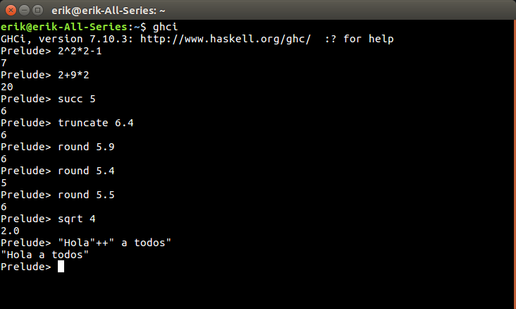
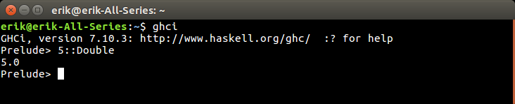
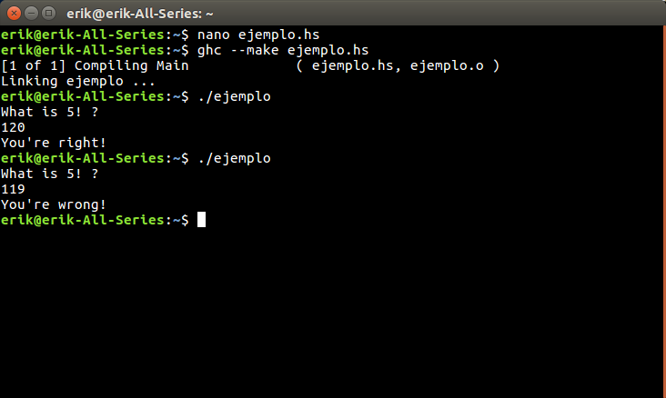

Lenguaje Haskell
Haskell es un lenguaje de programación moderno, estándar, no estricto y puramente funcional. Proporciona todas las características esbozadas anteriormente, incluyendo tipificación polimórfica, evaluación perezosa y funciones de orden superior. También tiene un sistema de tipo innovador que soporta una forma sistemática de sobrecarga y un sistema de módulos.
Está diseñado específicamente para manejar una amplia gama de aplicaciones, desde numéricas hasta simbólicas. Para este fin, Haskell tiene una sintaxis expresiva y una rica variedad de tipos de datos incorporados, que incluyen enteros y racionales de precisión arbitraria, así como los tipos enteros, de punto flotante y booleanos más convencionales.
Obtenido de: https://wiki.haskell.org/Introduction
Sintaxis
En el interprete de Haskell (también hay compilador) se pueden introducir expresiones matemáticas directamente, obteniendo un resultado inmediato.
Las cadenas de texto se ponen entre comillas y se usa "++" para concatenar.
Las funciones se llaman sin paréntesis.
Tipos de datos
Los tipos de datos son asignados de manera automática. Si se desea, se puede usar "::"
5 :: Double

Existen cinco tipos de datos en Haskell:
- Int: es un entero con al menos 30 bits de precisión.
- Integer: un entero con precisión infinita.
- Float: un numero de punto flotante de precisión simple.
- Double: es un numero de punto flotante de precisión doble.
- Rational: es un tipo fraccionario, sin error de redondeo.
Además, existe el "()" que significa unidad. Es equivalente al void de los lenguajes derivados de C.
Datos estructurados
Se tienen las listas y las tuplas. Las tuplas van entre (paréntesis) y las listas van entre [corchetes]. Las listas mantienen multiples valores del mismo tipo y las tuplas un numero fijo de valores y de diferentes tipos.
Prelude> [1, 2, 3]
[1,2,3]
Prelude> [1 .. 5]
[1,2,3,4,5]
Prelude> [1, 3 .. 10]
[1,3,5,7,9]
Prelude> [True, False, True]
[True,False,True]
Prelude> (1, True)
(1,True)
¿Qué se necesita para comenzar en Haskell
Se necesita un editor de texto y un compilador de Haskell. Se puede instalar "Haskell Platform" y desde la consola utilizar el compilador. También hay varios IDEs disponibles. Referirse a: https://www.haskell.org/downloads para más información.
Instalando Haskell Platform en Ubuntu
Me decidí por instalar Haskell Platform. Para ello se descarga la versión disponible en el repositorio oficial de la distribución. Para ello se ejecuta lo siguiente en la terminal:
sudo apt-get install haskell-platform
Un ejemplo sencillo en Haskell
El programa pregunta cual es el factorial de 5 (es 120). Si el usuario responde correctamente le dice que está correcto, y en caso contrario.
module Main where
factorial n = if n == 0 then 1 else n * factorial (n - 1)
main = do putStrLn "What is 5! ?"
x <- readLn
if x == factorial 5
then putStrLn "You're right!"
else putStrLn "You're wrong!"

En la imagen se muestra cómo se compila un archivo y como se ejecuta (en Windows genera un .exe)
Información consultada en : https://wiki.haskell.org/Aprende_Haskell_en_10_minutos
Las imagenes son capturas hechas por mí.